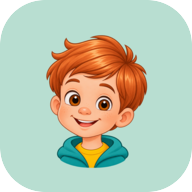
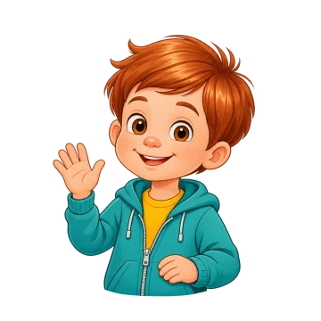
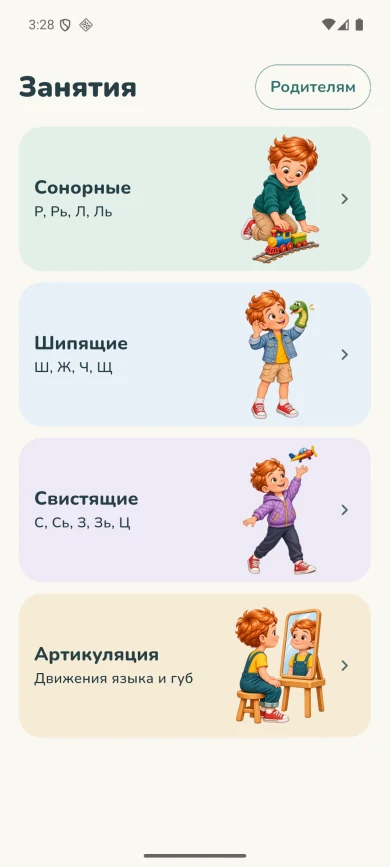
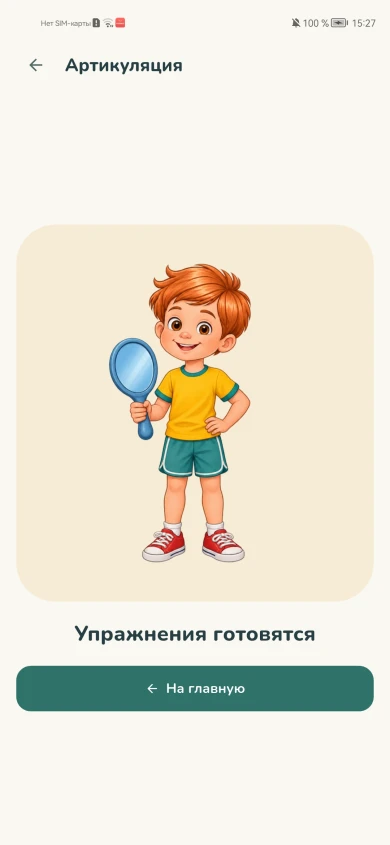

Сонорные
Р, Рь, Л, Ль

ГоворушкинРечевая практика дома · 4–7 лет
Создаём «Говорушкин», чтобы было удобнее повторять дома материал, который подобрал логопед.
Приложение для Android в разработке. Упражнения пока готовятся.

Р, Рь, Л, Ль
Ш, Ж, Ч, Щ
С, Сь, З, Зь, Ц
Упражнения для губ и языка
Знакомство с приложением
Настоящие экраны текущей версии. Содержание упражнений добавим после подготовки материалов.
Герка Говорушкин и выбор направления

Своя сцена для каждого звука

Отдельный раздел для гимнастики

Для родителей
«Говорушкин» задуман как дополнение к индивидуальным занятиям. Логопед помогает выбрать материал, а взрослый поддерживает ребёнка во время домашней практики.
Специалист подсказывает, какие звуки и упражнения подходят ребёнку сейчас.
Готовим упражнения по четырём направлениям, чтобы их было удобно находить в приложении.
Родитель помогает понять задание и повторить материал в удобном темпе.
О проекте
Сейчас в приложении есть главная, четыре направления, выбор звука и иллюстрации с Геркой Говорушкиным. Разделы пока показывают заглушки: сами упражнения ещё готовятся.
Планируем картинки, озвучку, упражнения и запись голоса для прослушивания. Содержание будем добавлять по мере подготовки и проверки.
Идеями и замечаниями о проекте можно поделиться на GitHub. Обращения публичные — пишите без личных данных ребёнка.
Написать о проектеПлатежи на сайте не принимаются. Приложение ещё не опубликовано в RuStore.